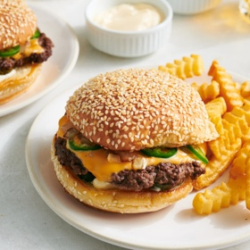

← All recipes
Spicy Jalapeño Cheeseburgers

Servings: 2 burgers · Prep: 5 min · Cook: 5 min
Ingredients
- 1 tablespoon unsalted butter
- 2 hamburger buns
- 8 ounces ground beef (preferably 20 percent fat), loosely rolled into 2 even balls
- 1/3 cup diced yellow onion
- Salt and black pepper
- 2 slices American cheese
- Mayonnaise or Thousand Island dressing, for spreading
- 4 dill pickle chips
- 1 small jalapeño, thinly sliced
Directions
- Ventilate your kitchen well by turning on the hood vent and leaving a nearby window or door open. Melt the butter in a large skillet over low. Split the buns open and, using your hands, move the bun halves around in the butter, cut sides down, to coat. Leave to toast until warmed through and golden brown, about 5 minutes.
- Meanwhile, heat a large stainless-steel skillet over medium-high until very hot. To check the heat, flick water droplets into the skillet; the skillet is hot enough when the water instantly beads up and evaporates.
- Add the balls of beef to the skillet, spacing apart. Using the bottom of a heavy-bottomed saucepan, smash the beef as thin as possible and leave the saucepan there for 10 seconds, then carefully lift the saucepan. Add half of the onion to the tops of the beef and the other half to the empty part of the skillet. Season the beef and onion with salt and pepper. Cook until the beef is browned, 1 minute. Using a flat, thin-edged spatula, scrape up the edges of the patties and flip them, top with the cheese slices and cook until the beef is browned and the cheese is melted, another 1 minute. Stir the onion a little.
- Apply a little mayonnaise to both sides of the toasted buns. Add the pickle chips to the bottom buns. Transfer the burger patties to the bottom buns, then top with the remaining cooked onion and a layer of jalapeño slices. Sandwich the burgers and eat immediately.
Original source: cooking.nytimes.com